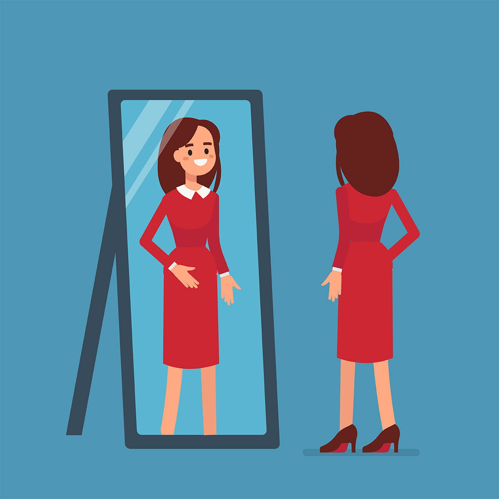

Leerdoelen
Veel van geleerd
Het leerzaamste en leukste om tijdens de projecten toe te passen vond ik Google Analytics. Ik heb nu geleerd
hoe ik na het opleveren van een website ook de resultaten van de website via GA kan inlezen en daardoor
verbeterpunten aan de website kan toepassen. Het fijne hieraan
vind ik ook de mogelijkheid om dit toe te passen in mijn opleiding ICT en bij mijn toekomstige werkgever.
Het is toch weer een extra skill die ik geleerd heb en die ik ook nog eens kan bewijzen met een certificaat.
Wat vond ik minder leuk
Over het algemeen gezien vond ik het schrijven van SEO teksten het minst leuk van de opdrachten die wel
relevant waren voor mijn leerdoel. Het verwerken van de zoekwoorden uit de keyword analyse vond ik wel leuk
om te doen maar de tekst daaromheen is niet helemaal mijn vakgebied.
Urgenda
Toegewezen leidersrol
Mijn groepsrol van het project was dat ik de leidersrol had over het sociale media en Google Analytics
aspect van de opdracht. Als “leider” van het social media team probeerde ik er voor te zorgen dat iedereen
wist welke taak hij/zij kon oppakken.
Verder heb ik in de meetings met de opdrachtgevers van Urgenda verschillende keren opleveringen
gepresenteerd zoals bijvoorbeeld de Google Analytics analyse of een social media advies en content. Ik
merkte tijdens het presenteren dat dit eigenlijk wekelijk steeds beter ging. Op het begin was het nog een
beetje aftasten ook omdat je elkaar nog wat minder goed kent, maar uiteindelijk heb ik denk ik duidelijk
opleveringen kunnen voordragen.
Voor een volgende keer mag ik nog wel wat meer en eerder zeggen als iemand niet binnen de afgesproken tijd
een taak niet had afgemaakt. Het kwam namelijk nog weleens voor dat er in de ochtend dat het af moest zijn
er nog een extra dag voor de uitwerking nodig was. Dit gaf ik dan minder snel aan waardoor er een niet
volledig afgewerkt product kon worden afgeleverd. In de loop van het project ging ik dat wel beter aangeven
waardoor de kwaliteit van het eindproduct omhoog ging.
Eindresultaat
Uiteindelijk ben ik erg trots op wat ik allemaal heb kunnen doen qua sociala media opleveringen en Google
Analytics en ook hoe het eindresultaat eruit is komen te zien. Ik kon erg goed mijn leerdoelen kwijt in de
opdracht waardoor eigenlijk ik alles wat ik deed zowel relevant was voor de opdrachtgever als voor mijzelf.
Ik ben ook trots dat de opdrachtgevers blij zijn met de opleveringen en er ook echt wat mee gaan doen of al
hebben gedaan.
Happy Talents
Natuurlijke leidersrol
Voorafgaand aan het project had ik geen leidersrol in de opdracht zoals ik die bij Urgenda had. Ik denk wel
dat ik op bepaalde gebieden wel meer de natuurlijke leidersrol is ontstaan in bijvoorbeeld het maken van een
ontwerp voor de landingspagina. Ik had daar toch met meeste ervaring in en dan wordt de leidersrol toch een
beetje afgedwongen.
In mijn vorige groepje in de webshopopdracht zei ik nog weleens als iemand met een onderdeel er niet uit
kwam “dat doe ik wel even”. Ik heb geprobeerd dit bij het Happy Talents groepje niet meer te doen. Zo heeft
bijvoorbeeld Lise de landingspagina van Happy Talents opgezet met HTML en CSS en heb ik mij daar amper mee
bemoeid. Daar leert zij niet alleen van als ze het zelf kan oplossen maar het was dus ook een goede
leerschool voor mij om het gewoon maar te laten gebeuren. Natuurlijk heb ik als ze een vraag had wel gewoon
meegekeken maar ik heb niet zelf elementen zitten op te lossen voor iemand anders zijn taak/leerdoel.
Eindresultaat
In tegenstelling tot het Urgenda project heb ik voor Happy Talents ook een aantal taken uitgewerkt die niet
binnen mijn leerdoel vielen zoals het maken van een ontwerp voor de landingspagina. Als groep hebben we deze
taak opgedeeld aangezien het bij niemand onder zijn leerdoel viel en zo iedereen even tijd kon blijven
besteden aan zijn leerdoel. Verder net als bij Urgenda blij dat de opdrachtgevers zo enthousiast zijn over
het eindresultaat. Fijn dat als je iets maakt dat daar ook de waarde van wordt ingezien en dat het gebruikt
gaat worden.